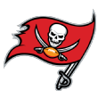

You can also make lists with HTML. Here's the top 5 picks of the 2019 NFL Draft:
-
1.
 Arizona Cardinals
Arizona Cardinals
- 2. San Francisco 49ers
- 3. New York Jets
-
4.
 Oakland Raiders
Oakland Raiders
- 5.  Tampa Bay Buccaneers
| Element | Description |
|---|---|
| Div | The div element is a container with no inherent effects. It is used to group content for styling. |
| Span | The span element is used for inline content, such as adding styling to words within a sentence. |
| Header | The header element is used for items at the very top of the page serving as introductory content. |
| Section | The section element allows more control over the document outline. This can seperate groups of items. |
This paragraph is wrapped in a div container within a new section. Then, you can add span elements to make things interesting.
You can also make lists with HTML. Here's the top 5 picks of the 2019 NFL Draft:
Arizona Cardinals
Oakland Raiders